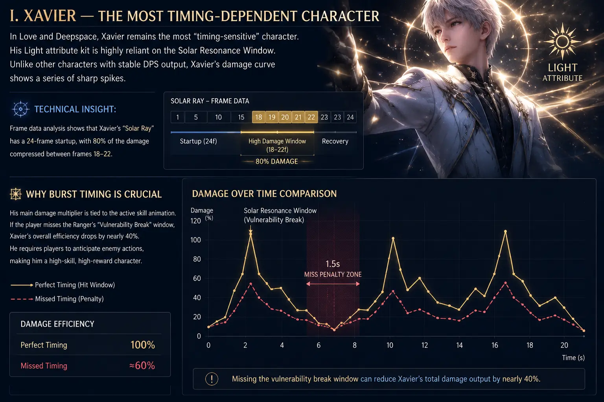
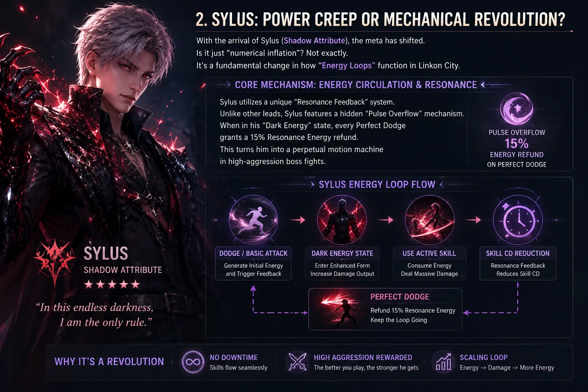

A Deep Dive into Light Burst Mechanics, Energy Circulation, and the "Infinite Dark Energy" Loop
Xavier remains the most "timing-sensitive" character in Love and Deepspace. His Light-attribute mechanics rely heavily on the Solar Resonance window. Unlike characters who provide consistent DPS, Xavier's damage curve is a series of sharp peaks.
Why Burst Timing Matters: His core multipliers are locked behind his active skill animations. If a player misses the "Weakness" break window of a Wanderer, Xavier's efficiency drops by nearly 40%.

Figure 1: Xavier's frame data showing damage concentration during the burst window.
With the arrival of Sylus (Shadow Attribute), the meta has shifted. It's a fundamental change in how "Energy Loops" function in Linkon City.
Sylus utilizes a unique "Resonance Feedback" system. When in his "Dark Energy" state, every Perfect Dodge grants a 15% Resonance Energy refund. This turns him into a perpetual motion machine in high-aggression boss fights.

Figure 2: The Infinite Dark Energy rotation visualized.
To achieve maximum uptime, players must master the 3-1-3 combo or the "Silent Pulse" Technique.
In high-level trials, this loop is the difference between a 2-star and a 3-star clear.
We tested two primary builds for Sylus in the Hunter's Contest (Floor 10+).
| Build Type | Pros | Peak DPS Variance | Best For |
|---|---|---|---|
| Crit Focused | Massive burst during Resonance. | +35.2% (at 65% Crit) | End-game Trials / Speedruns |
| Raw ATK% | Consistent performance, low investment. | Stable (+/- 2%) | Daily Grinding / Story Mode |
Team composition dramatically affects how both Xavier and Sylus perform. For Xavier, pairing him with a support that provides Energy Recharge allows tighter burst windows—characters with ATK buffs or cooldown reduction amplify his peak damage potential significantly. Sylus, on the other hand, benefits most from teammates that can maintain crowd control or apply DEF shred, enabling his Resonance Feedback loop to chain uninterrupted.
When building hybrid compositions, pay close attention to Resonance alignment. Xavier's burst window (frames 18-22 of Solar Beam) and Sylus's Dark Energy state have natural synergy if you time your switches correctly—activate Sylus's resonance to build energy, then swap to Xavier to dump damage during the stun window.
For players pushing leaderboard scores, mastering frame-canceling is non-negotiable. Xavier's Solar Beam can be animation-canceled at frame 22 (after the damage instance registers), shaving 12 frames off the recovery animation. This translates to roughly 0.4 seconds saved per rotation—enough to fit an extra skill rotation before Resonance ends.
Sylus benefits from a technique we call "Energy Banking." By intentionally delaying his Resonance activation until the Resonance Feedback gauge reaches 110% (achieved through Perfect Dodges), the overflow converts into a temporary ATK buff that persists for 6 seconds after the resonance ends. This allows you to front-load damage on priority targets during burn phases.
Even experienced players fall into these traps. Here are the most common mistakes we observed across thousands of Trial runs:
| Mistake | Character | Impact | Fix |
|---|---|---|---|
| Over-committing to full auto-attack chains | Both | Misses Weakness break windows | Cancel after 3rd hit to stay mobile |
| Resonance activation without stacks | Xavier | -40% burst efficiency | Build 3 Solar Marks before ultimate |
| Ignoring Perfect Dodge timing | Sylus | Breaks Dark Energy loop | Practice boss attack telegraphs |
| Wrong protocore main stat | Both | Up to -25% effective DPS | Refer to the optimization table above |